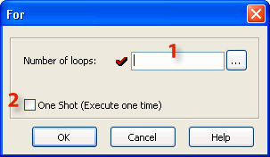

Topic: CL177

| For Instruction |
Topic: CL177
|
The For instruction indicates the starting point of a For - Next loop, and based on its user setting, determines how many times the For - Next loop will be executed in one program scan. Between the For instruction rung and the Next instruction rung, place the rungs of logic that should be repeated multiple times.
|
|
Caution: Placing one For-Next loop inside another For-Next loop is NOT permitted. |
|

1 Number of loops: The Number of loops can be a constant typed directly or it can be any eligible Data Memory Address.
|
|
Note: If the Number of Loops setup is large, it will increase the program scan time. When the program scan time exceeds the Watchdog Timer setup (Default = 200ms), the CLICK PLC drops from the Run mode. You may increase the Watch Dog Timer setup.
|
|
2 One Shot: Select the One Shot by clicking the check box. If One Shot is selected, the For-Next Loop will be processed (all loops) one time after being enabled. The For-Next Loop will not be executed again until there is another OFF-to-ON transition by the enabling contact.
Example Program: For-Next Loop
In the following example, when X001 is ON, the Ladder Program is executed 100 times in one same program scan.